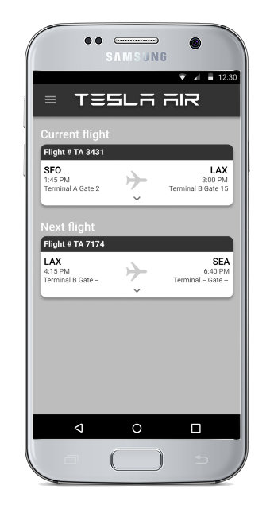

Tesla Air
UI/UX Design | Interaction Design
Ideas for a mobile app for "Tesla Air" airline employees to track turnaround delays. The application tracks
how long it takes teams to complete tasks during the turnaround time for an aircraft.
Airline teams may include flight attendants, baggage handlers, gate agents, etc.
Ideally, the app would relay information about common issues between teams, giving employees a heads up into upcoming delays.
view presentation
Objectives
- Time: Track how long it takes to do tasks
- Communication: Randomly generate shots and target
- Visibility: Have outcome of shots be determined by user interaction
Research
What happens before takeoff? To get a better idea, I gathered research on
an aircraft's turnaround process.
- Park and connect plane to auxiliary power.
- Unload baggage and cargo while passengers deplane.
- Team of cleaners clean and restock supplies.
- Switch to new crew. Team huddle with pilots and flight attendants.
- Conduct aircraft safety and security checks while catering and duty free items arrive.
- Refuel while new passenger baggage arrives.
- Confirm departing flight duration, # of passengers, destination, etc.
- Pilot performs pre-checks. Gate agent gets confirmation that everything is set.
- Passengers begin boarding.
- Aircraft tug arrives. Baggage and cargo finish loading. Passengers are seated.
- Ready for takeoff. Taxi to runway.
User Stories
After doing some research about the airline turnaround process, I wrote some user stories from the flight attendant's perspective to figure out
the main features for the app.
STORY: Checking the turnaround status
NARRATIVE: As a flight attendant, I want to check the plane's turnaround status so that I can know if we are on time.
SCENARIO: The user is logged in
GIVEN: The home screen is opened
WHEN: The user views their home screen
THEN: The user will see a progress bar and text highlighting the current status of the plane.
STORY: Checking the status of a specific team
NARRATIVE: As a flight attendant, I want to check a specific team's status so that I can know if they are on schedule with their tasks.
SCENARIO: The user is on the home screen
GIVEN: The side bar is opened
WHEN: The user taps on a specific team (eg. Baggage handlers)
THEN: The user will see a screen of to-do list/ current progress for those users.
STORY: Track my team's progress
NARRATIVE: As a flight attendant, I want to track my own team's status so that I can see how long it takes us to do tasks & improve our time.
SCENARIO: The user is on the home screen
GIVEN: The side bar is opened
WHEN: The user taps on their team
THEN: The user will see a screen of to-do list/ current progress for their team and a record of pervious turnaround times.
Initial Prototype Ver. 1

These are the first sketches I created based on the user stories, but I didn't end up going with this design for many reasons.
One of the things scrapped was the progress bar that shows the turnaround progress of the plane.
I realized that the progress bar wasn't practical since much of the events occurred simultaneously rather than chronologically,
plus there was too much text on the home screen. Additionally, I also did not go with the design for the team page because I realized
I focused too much on the team's specific tasks. For instance, if I was a flight attendant looking at the cabin cleaning crew's page, I wouldn't
care whether they were wiping tray tables or vacuuming; I would only need to know if they were on schedule or not.
Initial Prototype Ver. 2

I ended up going with most of what I sketched out for the second version of the prototype.
In this version, the home screen would show the current flight information and the next flight the employee would go to.
Clicking on a flight would show a "status board" for all the teams working on that flight.
The team page would show the team's current status, how long it would take them to complete their turnaround tasks, and
if they were on their own page, options to mark the tasks as "complete" or to alert the other teams of a delay.
User Flow Diagram
Final Prototype Screens